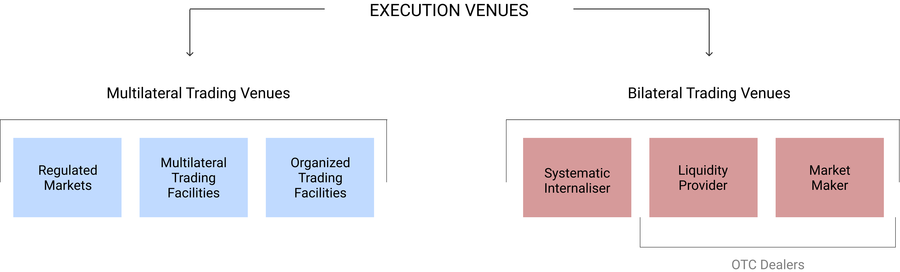

Systematic Internaliser
Introduced by MiFID in 2007, Systematic Internalisers (SI) are institutions large enough to match client orders internally, or against their own books (unlike broker crossing network, which may route orders between a number of institutions). They are defined in MiFID as an investment firm which, "on an organised, frequent, systematic and substantial basis, deals on own account by executing client orders outside a regulated market, an MTF or an OTF, without operating a multilateral tradin system".
The above explanation is resonably simple to understand the concept of SI. However, those who are not well versed with the market structures in Europe may find it difficult to understand the above explanation. Therefore, let me try to explain the concept in a simpler way, as below.
A broker gets buy and sell orders from its clients for various financial instruments such as equities, bonds, ETFs, derivatives, etc. It routes these orders to an exchange such as Eurex, Euronext or LSE for execution. The clearing and settlement is done by the clearing corporation linked to the exchange. There is no risk in the business because he neither maintains inventory of the financial products that he deals with, nor takes market risk. The broker earns his income through commissions. The commissions can be a percentage of trade value or a lump sum amount irrespective of number of trades executed. The type of commission structure depends on the type of clients they serve.
A dealer, on the contrary, is someone who deals on his own account. He buys financial instruments from clients who are willing to sell; and sells financial instruments to clients who are willing to buy. He is a market maker. He providers liquidity to the market. He, usually, maintains some inventory of the financial products that he deals with and takes market risk. His income is based on the differential between buy and sell rates. He does not get any commissions. Since, he is taking market risk, it is possible that he may incur losses.
Both brokers and dealers are called as market intermediaries. The word "market intermediaries" is used commonly across all markets in the world. Under MiFID II, these intermediaries are also called as "Investment Firms". Many people get confused with this terminology, as it is particular to Europe and is not commonly used in other markets elsewhere. We generally associate the word Investment Firm with companies such as mutual funds, hedge funds, investment bankers, etc. However, the word "Investment Firm" used under MiFID has a wider meaning.
Most firms, usually, do both broking and dealing business. Therefore, they are called as "broker-dealers".
Now, consider the following. A broker-dealer receives a buy order for 100 shares of Siemens from Client A. At about the same time, it receives a sell order for 100 shares of Siemens from Client B. If the broker-dealer is a dealer in this particular security
(it is quite possible that dealers deal with a few selected securities only and not all) then it can give a higher quote to Client A and a lower quote to Client B (while complying with Best Execution rules under MiFID), thereby making a profit on the differential in prices. On the contrary, acting as a broker, it may route this order to an exchange for execution. The exchange being a multilateral trading facility matches buy orders with sell orders. But let's imagine for a moment that instead of routing the orders to an exchange, can't the broker simply match the orders internally in its books and clear the trades itself? The answer is Yes, if it is a Systematic Internaliser. MiFID allows certain firms to register themselves (or become) SI to carry out such internal matching of orders - either client orders against client orders or client orders against its own dealing book.
One may argue that this is like taking over the role of an exchange, in a limited way. And if so, what is the difference between an exchange and a SI? Well! The answer to this is both yes and no. SI are similar to exchanges in the sense that they can match orders. However, they are fundamentally different from exchanges. Exchanges provide trade/settlement guarantee, SI cannot and do not provide trade/settlement guarantee. Also, exchanges are multilateral trading facilities, while SI's order matching does not constitute multilateral order matching; it is basically OTC in nature. The below diagram shows the various types of venues available in Europe currently.

Most large banks have registered themselves as SI's in Europe.
Criteria for becoming a SI
Before understandin the criteria for an SI, the most important thing that needs to be kept in mind is that the concept of SI is based on products not entities. That means, an investment firm can be a SI in one product, while it may not be so in another.
There are two essential criteria for becoming an SI - (1) Frequency and systematic basis in dealing in financial products, and (2) substantial basis in dealing in financial products.
The frequent and systematic basis means that an investment firm should be dealing frequently and systematically in order to qualify as SI for those instruments. The words "frequently" and "systematically" are qualitative terms. How do we make sense of it? The answer is to quantify these words in terms of some numbers. ESMA has provided certain thresholds in terms of the number of OTC trades in the financial instrument carried out by the investment on own account by executing client orders. If the number is more than the threshold then the investment firm qualifies to be an SI, under this criteria.
The substantial basis means that the trades carried out by the investment firm in the instruments should be of a substantial size when compared to the overall trades in the entire EU region. ESMA has provided two measures: (1) the size of the OTC trading carried out by the SI in relation to the total trading of the SI in a specific financial instrument; or (2) the size of the OTC trading carried out by the SI in relation to the total trading in the EU in a specific financial instrument.
If a firms's total trading meets the above criteria, they automatically become an SI. Alternatively, an existing SI can opt-out of being an SI. Most banks, however, have preferred to voluntarily opt-in to be an SI for commercial reasons. There are about 222 SI's currently in Europe as per ESMA's latest record.
Rules to be followed by firms while acting as SI
- Best execution rules
- Pre-trade transparency
- Post-trade transparency
Access to Quotes
Systematic Internalisers are allowed to decide, on the basis of their commercial policy and in an objective non-discriminatory way, the clients to whom they give access to their quotes. They may refuse to enter into or discontinue business relationships with clients on the basis of commercial considerations such as the client credit status, the counterparty risk and the final settlement of the transaction.
In order to limit the risk of exposure to multiple transactions from the same client, systematic internalisers are allowed to limit in a non-discriminatory way the number of transactions from the same client which they undertake to enter at the published conditions.
Products dealt by SI
- Equity
- Equity like instruments, such as:
- Depository receipts
- Exchange traded funds
- Certificates and other similar financial instruments
- Non-equity instruments, such as:
- Derivatives
- Bonds
- Structured finance products
- Emission allowances
Conclusion
Systematic Internaliser is an evolving concept. The scope, obligations and responsibilities for compliance would develop over a period of time.
END OF MY NOTES